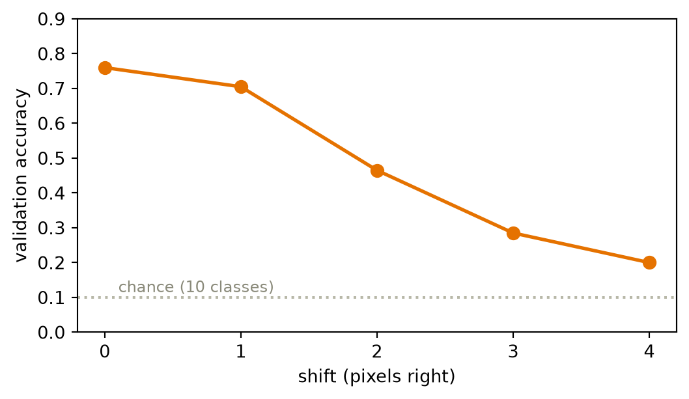
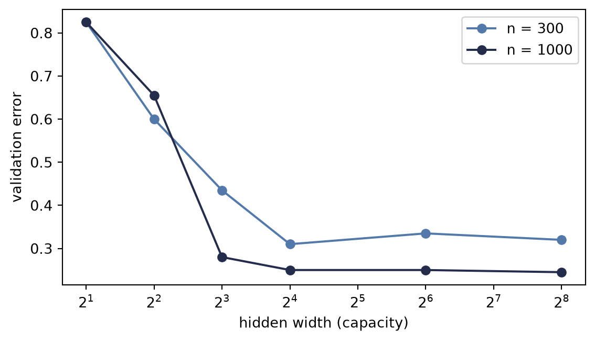

6When It Fails: Generalization in Pictures, and Inductive Bias
Part I has given us everything a course could promise: models with universal expressive power (Chapter 3), losses grounded in maximum likelihood (Chapter 2), an optimizer that scales (Chapter 4), and gradients for anything (Chapter 5). This chapter takes all of it, aims it at real images, and succeeds completely.
Then we will look a little closer, and the wheels will come off. Watching how they come off — in pictures rather than theorems — is the most important lesson of Part I, because the cure is the idea the entire rest of this book is built on.
6.1 Victory
The data is a subset of Fashion-MNIST, the classic benchmark from our live sessions: 28×28 grayscale images of clothing in ten classes. The model and training loop hold no surprises: an MLP from Chapter 3, trained exactly as in Chapter 4:
Seventy-six percent on held-out validation images, from one thousand fitting examples and a few seconds of CPU. The split was fixed before any experiment, and the separate test set remains sealed until the end of the chapter. By every metric we have learned to compute, we might be done.
The rest of this chapter is about why we are not.
6.2 Two experiments that should worry you
Experiment 1: move everything two pixels
Take the validation images and shift each one two pixels to the right. Nothing about any garment changes: a coat is a coat, wherever it hangs in the frame. Any human would call the original and shifted batches equivalent for classification.
Two pixels, and the accuracy is nearly cut in half. Push further and the collapse completes:
Code: accuracy vs. shift
import matplotlib.pyplot as pltshifts =list(range(5))accs = [accuracy(net, shift_right(X_val, s), y_val) for s in shifts]plt.figure(figsize=(5.6, 3.3))plt.plot(shifts, accs, "o-", color="#E57200", lw=2, ms=7)plt.axhline(0.1, ls=":", color="#B8B8A8")plt.text(0.1, 0.115, "chance (10 classes)", color="#8A8A7A", fontsize=9)plt.xlabel("shift (pixels right)"); plt.ylabel("validation accuracy")plt.ylim(0, 0.9); plt.xticks(shifts)plt.tight_layout(); plt.show()

Figure 6.1: The validation cliff. Each pixel of horizontal shift destroys accuracy although the garments themselves never changed. By four pixels the model is approaching guesswork.
Experiment 2: destroy the images entirely
Now the stranger experiment, from the lecture’s “fatal flaw” argument. Choose one fixed random permutation of the 784 pixel positions and apply it to every image, fit and validation alike. The displayed arrays are not recognizable pictures anymore — the ordinary grid adjacency has been destroyed. Retrain the same MLP on this scrambled world:
Code
torch.manual_seed(0)pixel_perm = torch.randperm(784) # one fixed scrambling for all imagesnet_shuffled = train_mlp(X_tr[:, pixel_perm], y_tr)print(f"original images: validation accuracy {accuracy(net, X_val, y_val):.1%}")print(f"shuffled pixels: validation accuracy "f"{accuracy(net_shuffled, X_val[:, pixel_perm], y_val):.1%}")
original images: validation accuracy 76.0%
shuffled pixels: validation accuracy 77.0%
The two validation accuracies are close in this one deterministic run. That is not an uncertainty estimate, but it is enough for the structural point: after retraining, an invertible relabeling of pixel coordinates costs this MLP no visible accuracy.
Hold the two results side by side and the diagnosis writes itself:
The MLP hypothesis class and training procedure show no preference for the structure that matters, including pixel adjacency and image geometry, yet the fitted model is hypersensitive to a nuisance that should not matter: where the garment happens to sit. It learned the dataset without needing an image-aware representation.
6.3 The autopsy, in pictures
Why exactly does shifting hurt a model that shuffling cannot? Look at what the model actually learned. Each row of the first layer’s weight matrix is a 784-vector — which means we can reshape it into a 28×28 image and look at it. And we know from Chapter 1 what such a row is: a template, scored against the input by dot product.
Figure 6.2: Sixteen first-layer templates, reshaped into images. Each is a global, full-frame pattern; many are diffuse rather than recognizable garment detectors. A template that spans the whole frame changes its score when the input pattern moves.
There is the whole story in one figure. Every template is global — a pattern stretched across the entire frame, tuned to where garments sat in the training images. Shift the input two pixels and every pixel of every template now scores against the wrong part of the garment; hundreds of learned template scores change at once. Conversely, the fixed permutation is merely an invertible relabeling of coordinates. Retraining can permute the first-layer weights in the opposite direction, so the same functions remain available even though adjacency has been destroyed. A model trained on ordinary images is not itself invariant to arbitrary pixel permutations.
Capacity was never the issue. By Chapter 3’s universal approximation theorem, this network can represent a perfectly shift-tolerant classifier. It has no reason to find one: nothing in its architecture, loss, or data ever told it that position is a nuisance and adjacency is meaningful.
6.4 Naming the disease
With the failure in hand, the classical concepts of Part I snap into focus.
Hunting the U-curve
The textbook story (Chapter 1’s cartoon) predicts that as capacity grows, validation error should fall and then rise as the model overfits. We now have everything needed to test the cartoon on real data: a width sweep at two dataset sizes:
Code: the width sweep
widths = [2, 4, 8, 16, 64, 256]plt.figure(figsize=(6, 3.5))for n, color in [(300, "#5379AA"), (1000, "#232D4B")]: errs = [1- accuracy(train_mlp(X_tr[:n], y_tr[:n], hidden=h, epochs=60), X_val, y_val)for h in widths] plt.semilogx(widths, errs, "o-", color=color, label=f"n = {n}", base=2)plt.xlabel("hidden width (capacity)"); plt.ylabel("validation error")plt.legend(); plt.tight_layout(); plt.show()

Figure 6.3: Hunting the U-curve: validation error vs. hidden width at two fitting-set sizes. Error falls steeply as capacity grows, then flattens. In this one seeded sweep, n=300 shows a small late upturn while n=1000 does not. The result describes this regime; it does not estimate a scaling law.
Read it honestly. The left side of the cartoon is emphatically real: too little capacity underfits badly. But the dreaded right side barely materializes, with a whisper of an upturn at the small dataset and nothing at the larger one. This is exactly the caveat planted in Chapter 1: the U is a helpful cartoon, not a law of nature. The optimizer, sample size, and data structure can all shape the curve. This one seeded Adam sweep does not identify their separate effects, and it does not establish a \(1/n\) variance law.
Which sharpens our problem instead of solving it: our model does not fail for having too much capacity. It fails for having no knowledge. No point on either curve survives a two-pixel shift.
The curse of dimensionality
Could we fix everything with data alone, just by showing the model garments at every position? Count what that costs. Our images live in 784 dimensions; a small color image (32×32×3) needs 3,072 numbers, a one-megapixel photo three million, an ImageNet input 150,528. And covering a \(d\)-dimensional space densely requires exponentially many examples: if 9 points cover a 1-D interval at some resolution, matching that density takes \(9^2\) points in 2-D and \(9^d\) in \(d\) dimensions. For \(d = 784\), there are not enough atoms in the universe, at any exchange rate.
High dimensionality also breaks the very idea of “similar examples”:
Figure 6.4: Distance concentration for 300 points sampled uniformly from a unit cube: the average ratio of nearest-neighbor to farthest-neighbor distance, by ambient dimension. At d=784 the ratio reaches 0.89. This is a controlled geometry example, not a claim that natural images fill the 784-dimensional cube uniformly.
In the uniform cube, brute-force interpolation loses genuinely near neighbors as the ambient dimension grows. Natural images are highly structured and may concentrate near a much lower-dimensional set, so this experiment is not their empirical distance distribution. It shows the price of trying to cover an unconstrained 784-dimensional space and why useful structure must enter through data, representation, or architecture.
6.5 The cure has a name
Return to the word planted on the very first pages of this book (Chapter 1): inductive bias — the nudge that steers a learner toward the functions we want, among the infinitely many that fit. Our MLP’s failure is not a capacity problem or (fixably) a data problem. It is a knowledge problem: we knew things about images that we never told the model.
Say them out loud — the two principles from the lecture:
Locality. Nearby pixels are related; a pixel and its neighbor jointly form edges, textures, parts. Distant pixels, far less so. (The shuffle experiment proved our MLP holds no such belief.)
Translation structure. A local detector’s response should move with the feature (equivariance), while a classifier’s final verdict should tolerate or ignore small changes in position (invariance). The shift experiment showed that our fitted MLP did neither reliably.
Here is the move that powers the rest of this book: build these beliefs into the architecture itself — as constraints. Constrain each template to look at a small local patch instead of the whole frame. Then share that template across every position, so the detection rule itself does not depend on where. Two constraints, and both pathologies are attacked at their root. The parameter count falls too: our MLP has 203,530 parameters, while the LeNet model in Chapter 8 will have 61,706, less than a third as many. Sharing is a massive economy.
TipConstraints are knowledge
A constraint looks like a reduction in power: the constrained model is a strict subset of the MLP. That is exactly the point. By Chapter 1’s bias–variance lens, we are spending bias — assumptions we are confident of — to collapse the search space onto functions that respect the structure of images, slashing variance and sample complexity. Inductive bias is not a limitation of a model; done right, it is everything you know about the world, cast in architecture. And it is a dial, not a dogma: give a weakly-biased model enough data and it can win again — a trade we will meet at the frontier in Chapter 16.
6.6 The pivot
Look once more at the templates figure. The fix is almost visible in it: the templates should not span the frame. They should be small and local — and they should slide, scoring every neighborhood of the image with the same little pattern, so that a sleeve found anywhere is the same sleeve.
A local template, slid across the image, scoring each position by dot product. That machine has a name, it predates deep learning by decades, and Part II opens by building it with our bare hands — then asking this book’s favorite question about it:
What if the template were learnable?
6.7 One sealed test check
The architecture, optimizer, shift size, and reported metrics are now fixed. Only now do we fit the same MLP on all 1,200 development examples and open the 600-example test set once:
Code: one final test-set check
net_final = train_mlp(X_dev, y_dev)print(f"clean test accuracy: {accuracy(net_final, X_test, y_test):.1%}")print(f"shift-2 test accuracy: "f"{accuracy(net_final, shift_right(X_test, 2), y_test):.1%}")
clean test accuracy: 80.8%
shift-2 test accuracy: 42.0%
The sealed check confirms the diagnostic rather than creating it: 80.8% on clean test images becomes 42.0% after the predeclared two-pixel shift.
6.8 Okay, so — the lesson of Part I
Every metric can say yes while the model has learned the wrong thing. Our MLP scored well on clean held-out data while its hypothesis class showed no adjacency preference (fixed shuffle) and its fitted predictions were hypersensitive to a nuisance shift.
The autopsy is visual: global templates, tuned to position, blind to adjacency.
Capacity is not the culprit in this experiment. The U-curve barely appears in one seeded sweep, while the uniform-cube example shows why unconstrained ambient coverage becomes expensive.
The cure is inductive bias: locality and translation structure, built in as constraints. Knowledge, cast in architecture.
Deeper dive
NoteFor the curious: how deep this rabbit hole goes
Networks can memorize random labels. Zhang et al. reported 100% training accuracy on randomly labeled CIFAR-10 and 95.20% on randomly labeled ImageNet under their finite training budget, not 100% on ImageNet. Capacity is abundant enough that fitting noise is easy (Exercise 4 reproduces the phenomenon on our subset). Capacity alone therefore does not explain generalization; the data, optimizer, and architecture must enter the account.
The bias–variance picture, updated. Our flattened U-curve is a mild case of a broader phenomenon: with modern training, test error can even descend again beyond the interpolation point — “double descent.” The cartoon survives as intuition for the underfit regime; the overparameterized regime plays by subtler rules.
3Blue1Brown, Gradient descent, how neural networks learn, the visual companion to this chapter’s pacing, including the demonstration that a trained MLP can classify pure noise confidently.
Exercises
(Pencil.) Explain algebraically why the pixel shuffle costs the MLP nothing: if \(\matr{P}\) is a permutation matrix and we train on \(\matr{P}\vect{x}\) instead of \(\vect{x}\), exhibit the weight matrix that makes the two networks identical. Why does no analogous argument work for the shift?
(Code.) Augment the training set with random shifts of ±3 pixels and retrain. Re-plot the cliff. How much robustness did augmentation buy, what did it cost in clean accuracy and compute, and — the real question — what knowledge did augmentation encode, compared to building invariance into the architecture?
(Code.) The U-curve hunt used widths up to 256. Push to 1024 and 4096 at \(n = 300\), repeating each width across several seeds. Then compare Adam with minibatch SGD from Chapter 4. Which patterns are stable enough to interpret?
(Code.) Randomly permute the training labels and train a wide MLP for long enough. Report train and test accuracy, and state in one sentence what this proves about capacity as an explanation of generalization.
(Pencil.) Estimate the first-layer parameter count of an MLP with 1,000 hidden units on an ImageNet-scale input (224×224×3). At one float32 per parameter, how much memory is that — and how does the number change if each unit instead sees only a 7×7×3 patch?